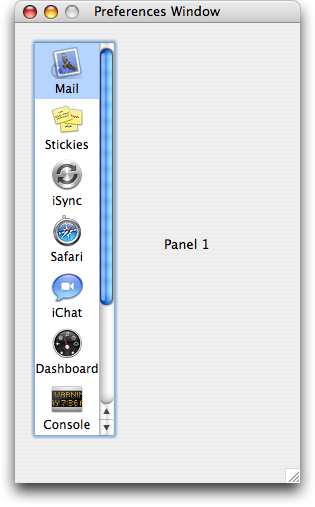
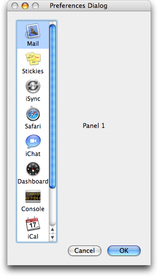

The first Carbon version minimizes changes from step 1 as much as possible to create an application that will launch natively in Mac OS X. The Classic version first gets updated to use CarbonAccessors.o and from there it's a simple matter to change it over to Carbon. The major difference is that the Aqua appearance has different metrics than the Platinum appearance so the UI has to be updated to present the proper versions of the windows and controls.
 For applications with a lot of UI, updating the metrics in the resource files may be prohibitively time consuming and you may wish to skip straight to using Interface Builder nib files discussed in Step 6: HIToolbox. The main code change is a few calls to QDFlushPortBuffer(), such as in the code that simulates a button click in the preferences dialog.
static Boolean dialogFilter(EventRecord *event, DialogRef *theDialog, DialogItemIndex *itemHit)
{
Boolean eventHandled = false;
char charCode, keyCode;
switch (event->what)
{
case keyDown: // handle key presses not handled by DialogSelect
case autoKey:
*theDialog = GetDialogFromWindow(FrontNonFloatingWindow());
SetPortDialogPort(*theDialog);
charCode = event->message & charCodeMask;
keyCode = (event->message & keyCodeMask) >> 8;
if ( (keyCode == kEnterKeyCode) || (keyCode == kReturnKeyCode) ||
(keyCode == kEscapeKeyCode) ||
( ((event->modifiers & cmdKey) != 0) && (charCode == '.') ) )
{
ControlRef button;
CGrafPtr dialogPort;
unsigned long finalTicks;
if ( (keyCode == kEnterKeyCode) || (keyCode == kReturnKeyCode) )
{
GetDialogItemAsControl(*theDialog, kStdOkItemIndex, &button);
*itemHit = kStdOkItemIndex;
}
else
{
GetDialogItemAsControl(*theDialog, kStdCancelItemIndex, &button);
*itemHit = kStdCancelItemIndex;
}
HiliteControl(button, kControlButtonPart);
#if TARGET_API_MAC_CARBON // in Mac OS X you have to flush
dialogPort = GetDialogPort(*theDialog); // your QuickDraw port's buffer
QDFlushPortBuffer(dialogPort, NULL); // to make screen updates happen
#else // outside of an update event
#pragma unused (dialogPort)
#endif
Delay(8, &finalTicks);
HiliteControl(button, kControlNoPart);
#if TARGET_API_MAC_CARBON
QDFlushPortBuffer(dialogPort, NULL);
#endif
eventHandled = true;
}
}
return eventHandled;
}
The other main change in the first Carbon version is to use the Carbon Help Manager instead of Balloon Help. See Help.c in the 2_First_Carbon folder and Providing Help Tags in Carbon for more information about help tags.